目录
1. 项目概述
1.1 产品背景
在国家"双碳"战略与绿色制造体系推动下，制造型企业及园区亟需数字化工具实现能源与碳排放的精准管理。本平台由山东世通国际认证有限公司打造，面向制造型企业，提供从数据采集、实时监控、多维分析到碳核算、合规申报、碳资产管理的全链路解决方案。
1.2 产品定位
企业绿色低碳工作的技术底座，覆盖能源管理、碳排放管理、产品碳足迹、绿色/零碳工厂申报、CBAM准备、ESG报告、碳资产管理等核心场景。平台以AI能力赋能报告生成与智能决策，以物联网能力支撑实时数据采集，形成"采-存-算-报"闭环。
1.3 目标用户
负责能源数据监测、录入、报警处理，日常操作平台核心功能。
负责碳排放核算、碳足迹建模、报告生成，对接合规要求。
负责绿色工厂/零碳工厂/绿色供应链等申报资料准备与提交。
通过全局仪表盘与决策看板，掌握能碳总体态势。
查看数据溯源、凭证附件，支撑第三方核查工作。
负责系统配置、用户管理、角色权限分配。
2. 用户角色与权限体系
平台采用基于角色的访问控制（RBAC），支持菜单权限与数据权限双重控制。角色管理模块支持角色创建、权限字符配置、状态启停。
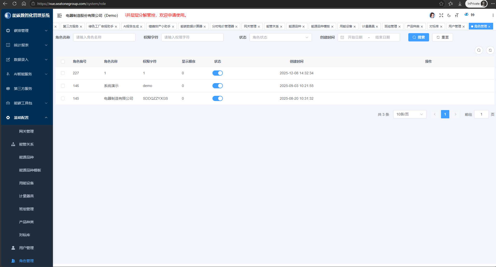
| 角色 | 核心权限 | 数据范围 |
|---|---|---|
| 系统管理员 | 系统配置、用户管理、角色权限分配、基础数据维护 | 全平台 |
| 能源管理员 | 实时数据查看、历史数据查询、报警处理、能耗录入 | 所属分厂/用能单元 |
| 碳管理专员 | 碳排放核算、碳足迹建模、因子库管理、报告生成 | 全厂碳数据 |
| 申报负责人 | 绿色工厂申报、资料上传、进度跟踪 | 申报相关模块 |
| 企业高管 | 仪表盘查看、报表浏览、决策看板 | 全厂汇总数据（脱敏） |
| 审核/核查人员 | 数据溯源、凭证附件查看、报告审阅 | 只读，按项目授权 |
3. 功能需求总览
系统主菜单结构如下，共14个一级模块、约40个功能页面：
3.1 首页仪表盘
首页是用户登录后的默认页面，以卡片+图表组合方式展示能碳核心指标，支持日/月/年维度切换。
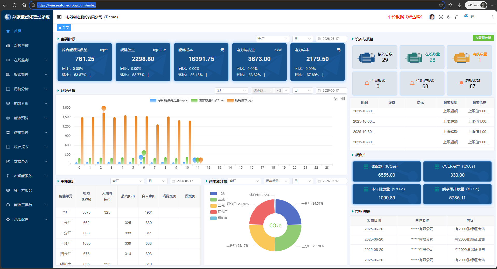
功能要素
- 核心KPI卡片：综合能源消费量（kgce）、碳排放量（kgCO₂e）、能耗成本（元）、电力消费量（kWh）、电力成本（元），每张卡片显示同比、环比变化率。
- 能碳趋势图：折线图展示综合能源消费量、碳排放量、能耗成本的时间趋势，支持按日/月/年切换。
- 用能统计表：按用能单元（全厂/各分厂）展示各能源品种（电力、天然气、蒸汽、自来水、清洗煤、原煤、风力/光伏发电、焦炉煤气、汽油）的消耗量。
- 碳排放分布：饼图展示各用能单元或能源品种的碳排放占比。
- 设备与报警：接入总数、在线数量、离线数量；今日报警、待处理报警、总报警数。
- 碳资产概览：碳配额（tCO₂e）、CCER资产（tCO₂e）、本年排放量（tCO₂e）、剩余可排放量（tCO₂e）。
- 市场供需：展示绿证出售、碳配额交易等市场信息列表（发布日期、单位名称、内容）。
3.2 双碳考核
双碳考核模块依据《碳达峰碳中和综合评价考核办法》，建立目标并层层分解管控，支持集团-分厂-车间多级考核。
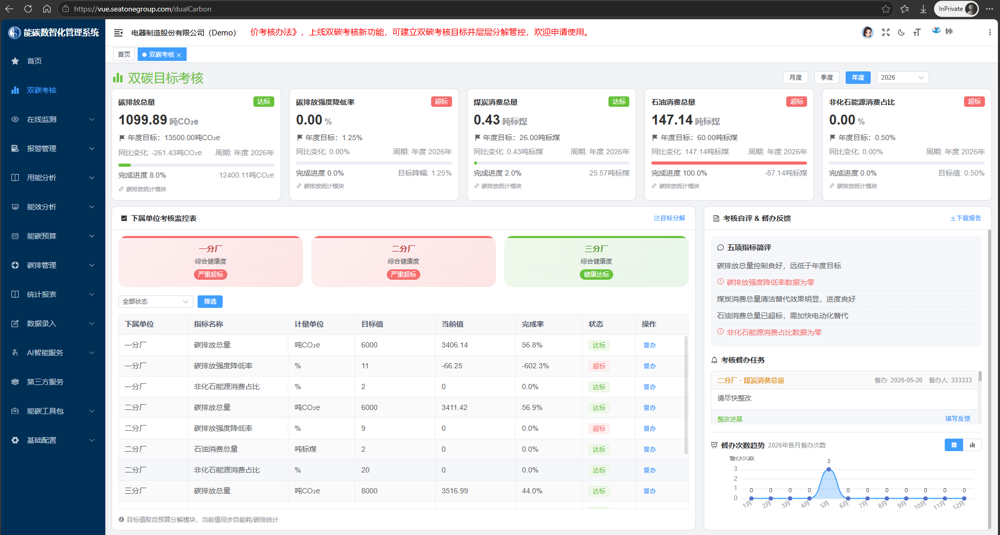
功能要素
- 目标考核卡片：碳排放总量、碳排放强度降低率、煤炭消费总量、石油消费总量、非化石能源消费占比等指标的年度目标、当前值、完成进度、同比变化。
- 下属单位考核监控：按分厂展示综合健康度（严重超标/轻度超标/健康达标），以颜色区分状态。
- 考核明细表：下属单位名称、指标名称、计量单位、目标值、当前值、完成率、状态（达标/超标）、操作（督办）。
- 考核自评与督办反馈：五项指标简评（文字描述当前状况）、考核待办任务列表、待办次数趋势图。
- 目标分解：支持将集团级目标逐层分解至分厂、车间、产线，形成目标树。
3.3 在线监测
在线监测是平台的数据采集与监控核心，对接工业物联网网关，实现能源数据的实时采集、历史存储与多维度对比分析。
3.3.1 实时数据
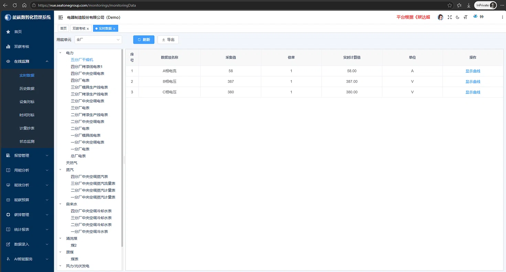
- 左侧能源树：按能源品种（电力、天然气、蒸汽、自来水、清洗煤、原煤、风力/光伏发电、焦炉煤气、汽油）组织，展开后显示各用能单元下的计量器具。
- 数据项列表：序号、数据项名称、采集值、倍率、实时计算值、单位、操作（显示曲线）。
- 典型数据项：A相电流、B相电压、C相电压等，数据实时刷新。
- 操作：刷新、导出Excel。
3.3.2 历史数据
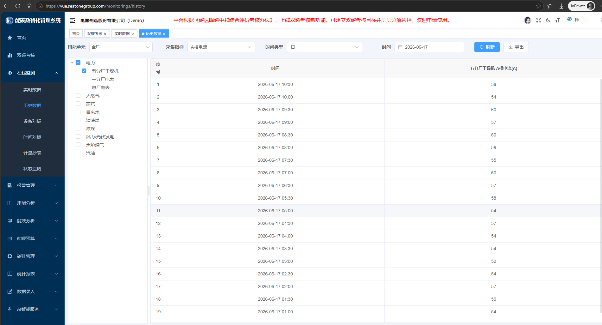
- 筛选条件：用能单元、采集指标（如A相电流）、时间类型（日/月/年）、日期。
- 数据列表：按时间顺序列出历史值（如每半小时记录一次），显示时间、数值。
- 曲线图：选择采集指标后以日/月/年粒度展示历史趋势。
3.3.3 设备对标
- 选择两台设备，在同一时间段内对比运行参数（如A相电流）。
- 两条曲线在同一坐标轴上叠加显示，便于差异分析。
- 表格列出两个时间段的数据及偏差值。
3.3.4 时间对标
- 同一设备不同时间段对比：可选择不同日期的同一时段，或同一日期的不同时段。
- 展示两个时间段的数值及偏差值。
3.3.5 计量抄表
- 表具抄表记录：起始时间、起始表码值、截止时间、截止表码值、差值（用量）、用能成本。
- 支持导出Excel。
3.3.6 状态监测
- 网关列表：网关编号、名称、型号、生产厂家、安装位置、接入表具数量。
- 计量器具列表：器具编号、名称、计量等级、安装位置、生产厂家、能源品种、状态（在线/离线）。
- 支持分页、搜索。
3.4 报警管理
3.4.1 报警设置
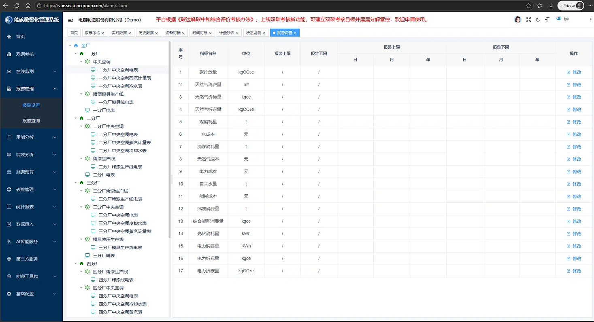
- 左侧用能单元树：按分厂/用能单元/计量器具层级组织。
- 指标列表：指标名称、单位、报警上限（日/月/年）、报警下限（日/月/年）。
- 支持指标：碳排放量、天然气消费量、天然气折标量、天然气折碳量、煤消耗量、水成本、洗煤消耗量、天然气成本、电力成本、自来水量、能耗成本、汽油消费量、综合能源消费量、光伏消耗量、电力消费量、电力折标量、电力折碳量等。
- 操作：修改阈值（点击"修改"按钮弹出编辑表单）。
3.4.2 报警查询
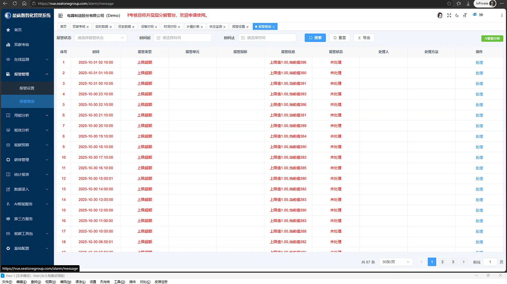
- 筛选条件：报警状态（未处理/已处理）、时间区间。
- 报警列表：时间、报警类型（上限超额/下限不足）、报警单元、报警指标、报警信息（如"上限值1.00，当前值386"）、报警状态、处理人、处理方法。
- 处理操作：点击"处理"按钮，填写处理人和处理方法后标记为已处理。
- 导出：支持导出报警记录。
- 分页：支持分页展示（如30条/页）。
3.5 用能分析
3.5.1 能耗查询
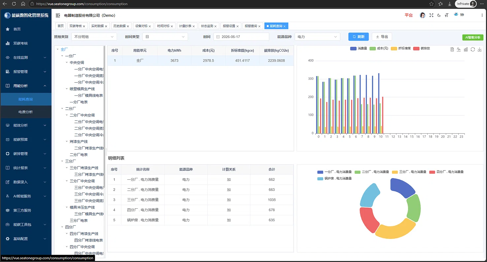
- 筛选条件：用能单元、班组、时间类型（日/月/年）、时间、能源品种。
- 汇总卡片：电力消费量（kWh）、成本（元）、折标准煤（kgce）、碳排放（kgCO₂e）。
- 柱状图：按小时展示消费量、成本、折标准煤、碳排放趋势。
- 明细列表：统计名称、能源品种、计算关系（加/减）、合计值。
- 饼图：各用能单元能耗占比。
3.5.2 电费分析
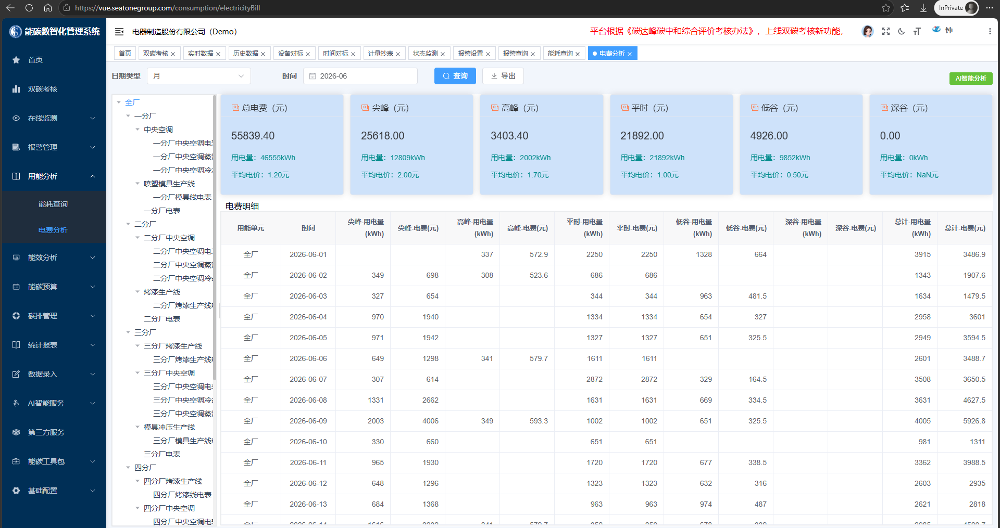
- 总电费卡片：总电费（元）、尖峰电费、高峰电费、平时电费、低谷电费、深谷电费，每张卡片显示用电量与平均电价。
- 电费明细表：用能单元、时间、尖峰/高峰/平时/低谷/深谷的用电量与电费、总计用电量与电费。
- 筛选：日期类型（日/月）、时间范围。
- 导出：支持导出电费明细。
3.6 能效分析
3.6.1 能效分析（能效对标）
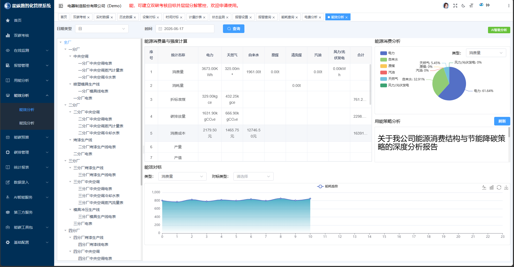
- 能源消费量与强度计算表：按用能单元展示电力、天然气、自来水、原煤、清洗煤、汽油、风力/光伏发电的消费量、折标准煤、碳排放量、消费成本、产量、产值。
- 能源消费分析饼图：各能源品种消费量占比。
- 用能策略分析：文字报告区域，展示关于能源消费结构与节能降碳策略的深度分析。
- 能效对标：选择类型（消费量/强度）和对标类型，展示能耗趋势曲线。
3.6.2 能流分析（桑基图）
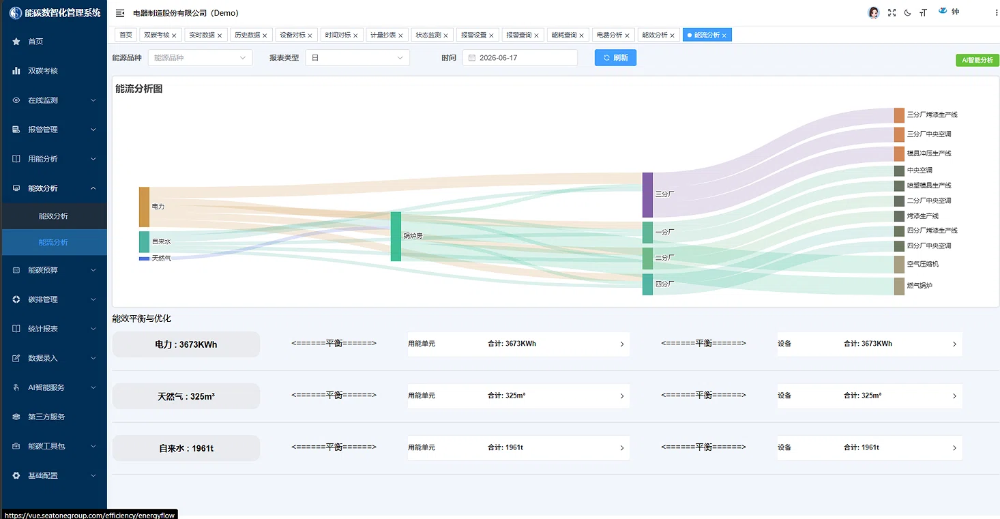
- 桑基图：展示能源（电力、自来水、天然气）从输入到各用能单元（三分厂烤漆生产线、三分厂中央空调、模具冲压生产线、中央空调、吸塑模具生产线、二分厂中央空调、烤漆生产线、四分厂烤漆生产线、四分厂中央空调、空气压缩机、燃气锅炉等）的流向及消耗量。
- 能效平衡与优化：按能源品种展示用能单元合计与设备合计的平衡关系（如"电力：3673kWh <=平衡=> 用能单元 合计：3673kWh <=平衡=> 设备 合计：3673kWh"）。
- 筛选：能源品种、报表类型（日/月/年）、时间。
3.7 能碳预算
能碳预算模块用于设定年度/月度能源消耗和碳排放预算，并与实际消耗进行对比预警。
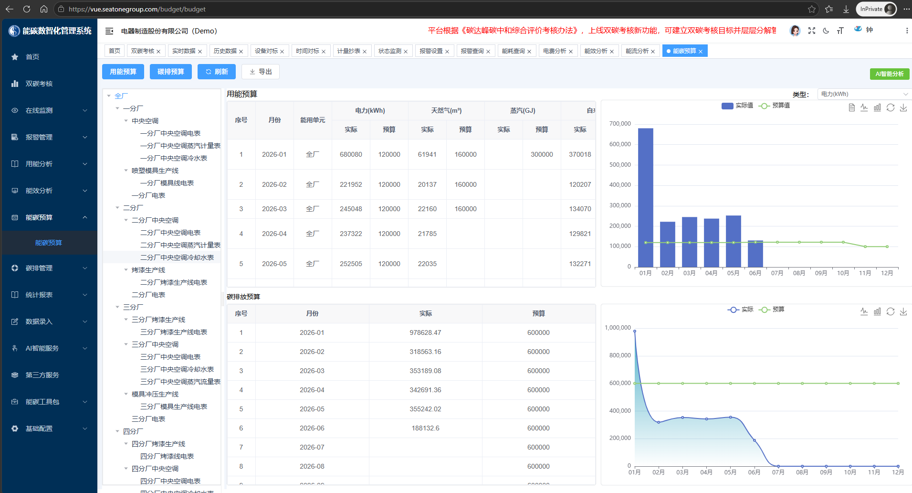
- 预算设定：按用能单元、能源品种、时间维度（年/月）设定预算值。
- 预算执行跟踪：展示预算值、实际值、完成率、偏差率。
- 预警机制：当实际值接近或超过预算阈值时触发预警。
3.8 碳排放管理
碳排放管理是平台的核心模块，覆盖碳排放核算、产品碳足迹、CBAM核算、供应链管理、碳资产、排放因子库、核查支撑、核算建模、足迹建模等子模块。
3.8.1 碳排放核算
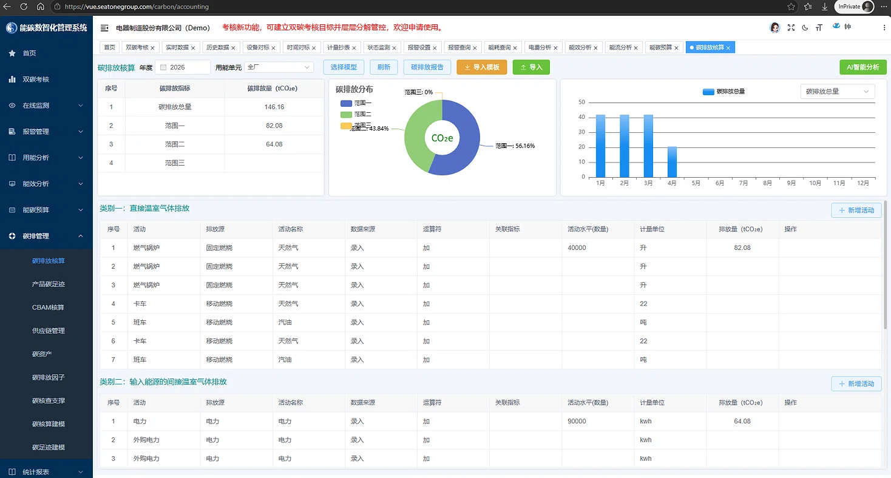
- 年度选择：如2026年；用能单元选择（全厂/分厂）。
- 碳排放概览卡片：碳排放总量（tCO₂e）、范围一/范围二/范围三排放量及占比。
- 碳排放分布：饼图展示范围一/二/三占比；柱状图展示月度碳排放趋势。
- 排放清单：按类别（类别一：直接温室气体排放；类别二：输入能源的间接排放）列出活动、排放源、活动名称、数据来源（录入/计算）、运算符、关联指标、活动水平（数量+计量单位）、排放量（tCO₂e）。
- 操作：选择模型、刷新、导入模板、导入数据、新增活动、生成碳排放报告。
3.8.2 产品碳足迹
- 生命周期建模：按原材料获取、制造、分销、使用、废弃五个阶段建立碳足迹模型。
- 活动列表：所属子类别、活动名称、单位、因子、来源、备注。
- 操作：新增/编辑/删除活动。
3.8.3 CBAM核算
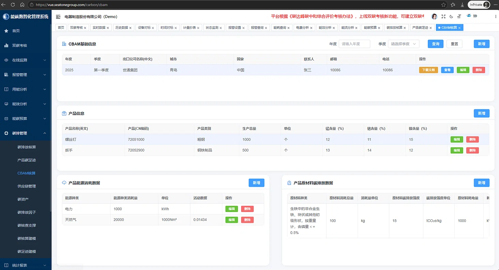
- 基础信息：年度、季度、出口公司、联系人等。
- 产品信息：产品名称（英文）、CN编码、产品类别、生产总量、单位、含碳量（%）等。
- 能源消耗数据：能源种类、消耗量、单位、活动数据。
- 原材料碳排放数据：原材料种类、消耗量、强度、单位等。
- 操作：下载文档、查看、编辑、删除。
3.8.4 供应链管理
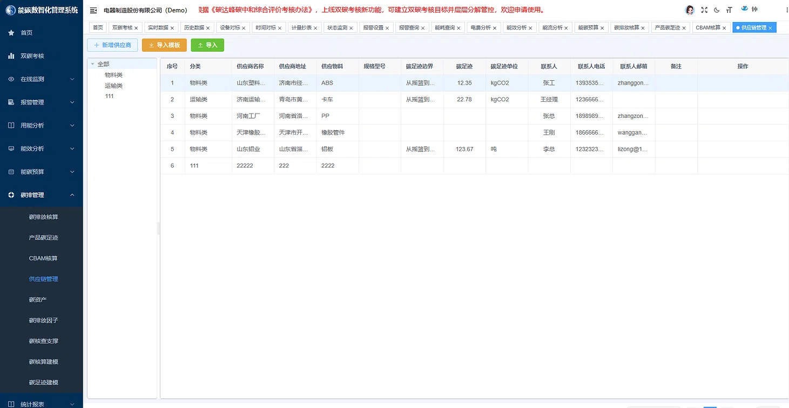
- 供应商碳足迹：管理供应商信息（名称、地址、供应物料、碳足迹边界、碳足迹数值及单位）。
- 导入/导出：支持模板导入供应商数据。
- 操作：编辑、删除。
3.8.5 碳资产
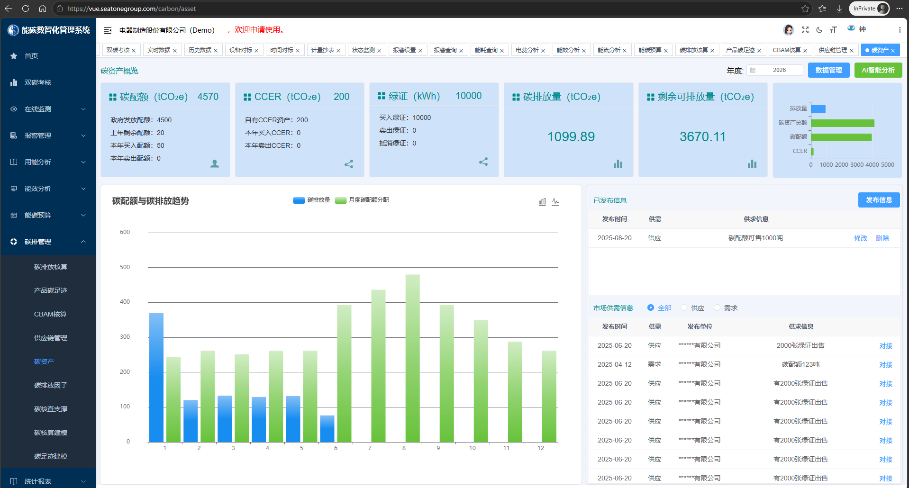
- 碳资产概览卡片：碳配额（tCO₂e）、CCER（tCO₂e）、绿证（kWh）、碳排放量（tCO₂e）、剩余可排放量（tCO₂e）。
- 碳配额详情：政府发放配额、上年剩余配额、本年买入配额、本年卖出配额。
- CCER详情：自有CCER资产、本年买入CCER、本年卖出CCER。
- 绿证详情：买入绿证、卖出绿证、抵消绿证。
- 碳配额与碳排放趋势图：柱状图展示月度碳排放量与月度碳配额分配。
- 已发布信息：发布时间、供需、供求信息，支持发布信息、修改、删除。
- 市场供需信息：发布时间、供需类型（供应/需求）、发布单位、供求信息，支持对接。
3.8.6 碳排放因子
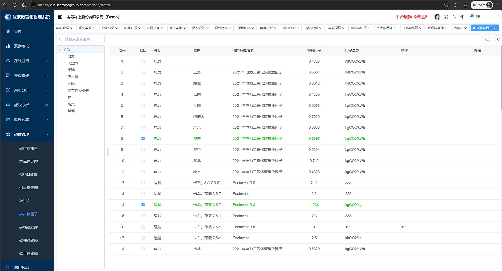
- 左侧分类树：全部、电力、天然气、柴油、原材料、运输、废弃物及处理、水、蒸汽、其他。
- 因子列表：序号、默认（是否默认因子）、分类、名称、引用标准/文件、排放因子值、因子单位、备注、操作（编辑）。
- 示例数据：
- 电力-华东：2021年电力二氧化碳排放因子 0.6096 kgCO₂/kWh
- 电力-上海：0.5834 kgCO₂/kWh
- 电力-东北：0.6012 kgCO₂/kWh
- 运输-卡车：Ecoinvent 3.8 数据库因子
- 操作：搜索、编辑、设置默认因子。
3.8.7 碳核查支撑
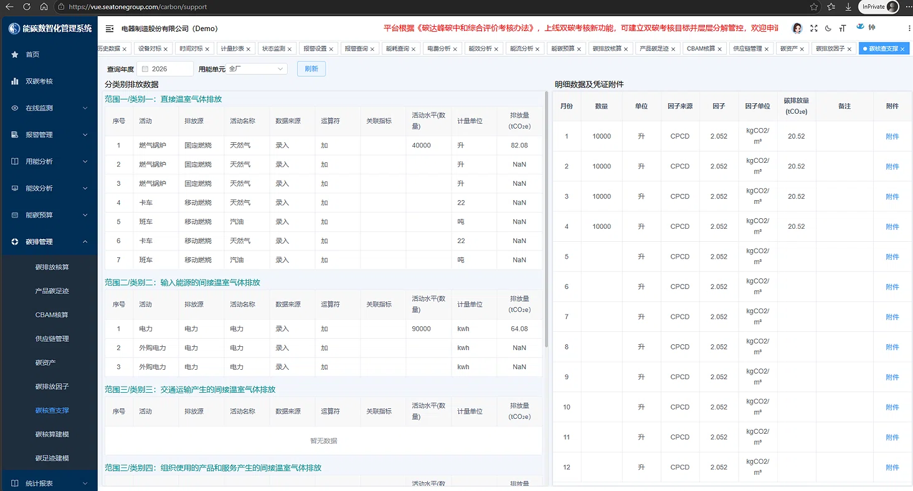
- 查询条件：查询年度、用能单元。
- 分类别排放数据：按范围一/二/三及细分类别（直接排放、输入能源间接排放、交通运输间接排放、组织使用的产品和服务产生的间接排放）展示活动、排放源、活动名称、数据来源、运算符、关联指标、活动水平、计量单位、排放量（tCO₂e）。
- 明细数据及凭证附件：按月份展示数量、单位、因子来源、因子、因子单位、碳排放量（tCO₂e），支持上传附件（如发票、检测报告）。
- 目的：数据可追溯，附件可查，便于第三方核查。
3.8.8 碳核算建模
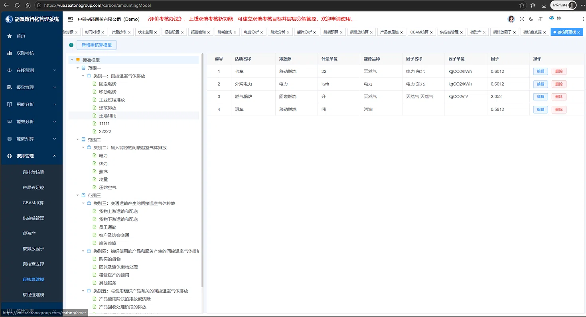
- 模型管理：左侧树形结构展示模型（如"标准模型"），支持新增碳核算模型。
- 排放活动配置：按范围一（类别一：直接温室气体排放-固定燃烧/移动燃烧/工业过程排放/逸散排放/土地利用）、范围二（类别二：输入能源的间接排放-电力/热力/蒸汽/制冷/压缩空气）、范围三（类别三：交通运输产生的间接排放；类别四：组织使用的产品和服务产生的间接排放；类别五：与使用组织产品有关的间接排放）组织。
- 活动列表：序号、活动名称、排放源、计量单位、能源品种、因子名称、因子单位、因子值、操作（编辑/删除）。
3.8.9 碳足迹建模
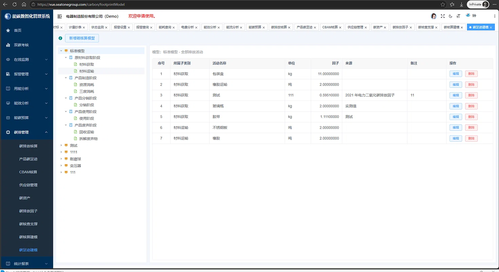
- 模型管理：左侧树形结构展示产品碳足迹模型（如"标准模型"），按生命周期阶段组织：原材料获取阶段（材料获取、材料运输）、产品制造阶段（资源消耗、三废消耗）、产品分销阶段、产品使用阶段、产品废弃阶段（回收运输、拆解废弃物）。
- 活动列表：序号、所属子类别、活动名称、单位、因子、来源、备注、操作（编辑/删除）。
- 示例活动：包装盒（kg，因子11.0）、橡胶运输（吨，因子2.0）、测试（111，因子0.5951，来源：2021年电力二氧化碳排放因子）、玻璃瓶（kg，因子2.0）、胶带（kg，因子1.111）、不锈钢板（吨，因子2.0）、橡胶（吨，因子2.0）。
3.9 统计报表
3.9.1 能耗统计表（日报/月报/年报）
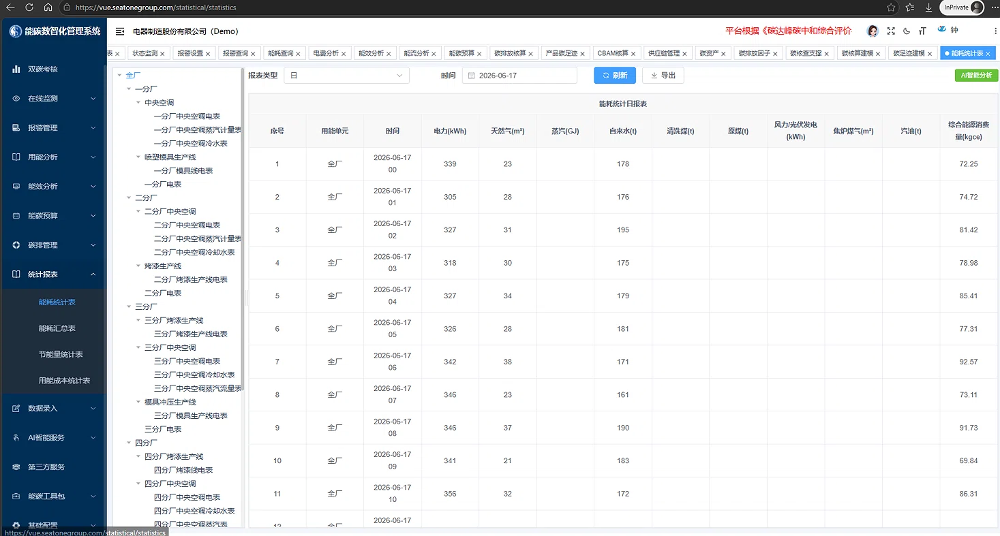
- 报表类型：日/月/年；时间选择。
- 表格字段：序号、用能单元、时间、电力（kWh）、天然气（m³）、蒸汽（GJ）、自来水（t）、清洗煤（t）、原煤（t）、风力/光伏发电（kWh）、焦炉煤气（m³）、汽油（t）、综合能源消费量（kgce）。
- 导出：支持导出Excel。
3.9.2 能耗汇总表
- 汇总各分厂的能耗数据，格式类似统计表，展示合计值。
3.9.3 节能量统计表
- 对比本期与同期：显示各能源品种的本期消耗量、同期消耗量、节能量及节能同比（%）。
- 支持按日/月/年查询。
3.9.4 用能成本统计表
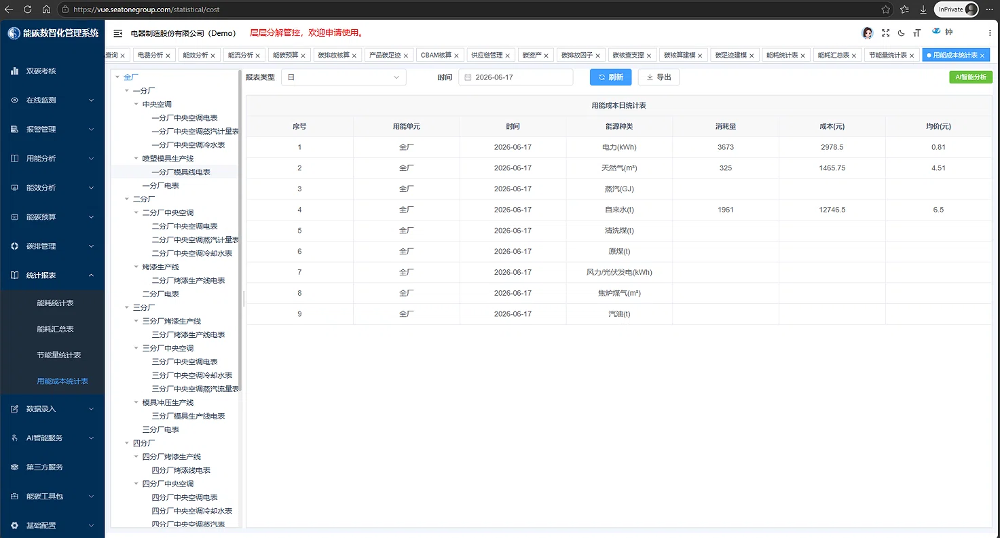
- 表格字段：序号、用能单元、时间、能源种类、消耗量、成本（元）、均价（元/单位）。
- 导出：支持导出Excel。
3.10 数据录入
3.10.1 指标录入
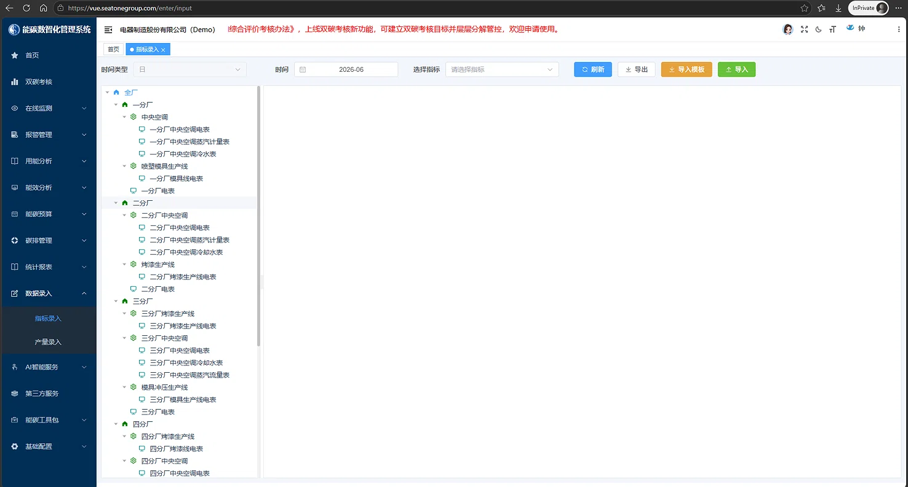
- 手动录入：选择时间类型（日/月/年）、时间、指标名称，录入数值。
- 批量操作：支持导入模板、导出数据。
- 组织方式：按用能单元组织（全厂/分厂/用能单元）。
3.10.2 产量录入
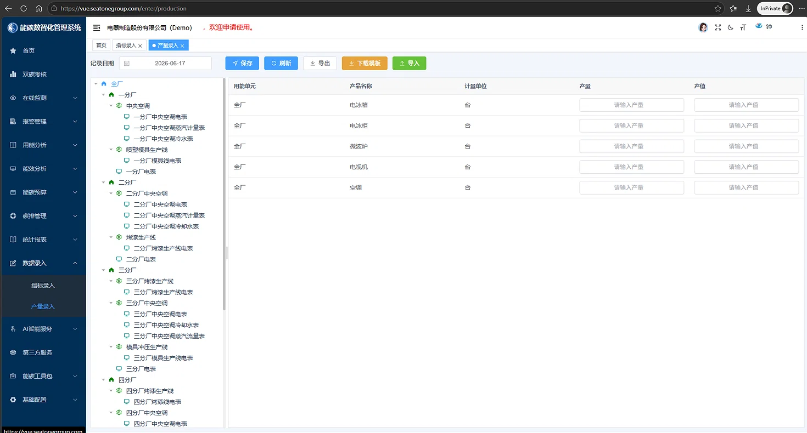
- 录入字段：记录日期、用能单元、产品名称、计量单位、产量、产值。
- 操作：保存、刷新、下载模板、导入。
3.11 AI智能服务
3.11.1 AI智慧管理平台
- 报告生成服务：提供"线上+线下"融合的认证/合规报告生成服务，过程合规、数据可溯。
- 服务列表：零碳工厂申报、温室气体核查、CBAM申报、绿色工厂评价报告、绿色供应链评价报告、能源管理体系认证、碳管理体系认证等，均可预约。
- 新增预约：填写预约信息提交申请。
3.11.2 企业级AI知识库
- 企业自定义知识库，存储政策、标准、报告模板等。
- 支持智能问答，基于大模型检索企业知识库内容。
3.12 第三方服务
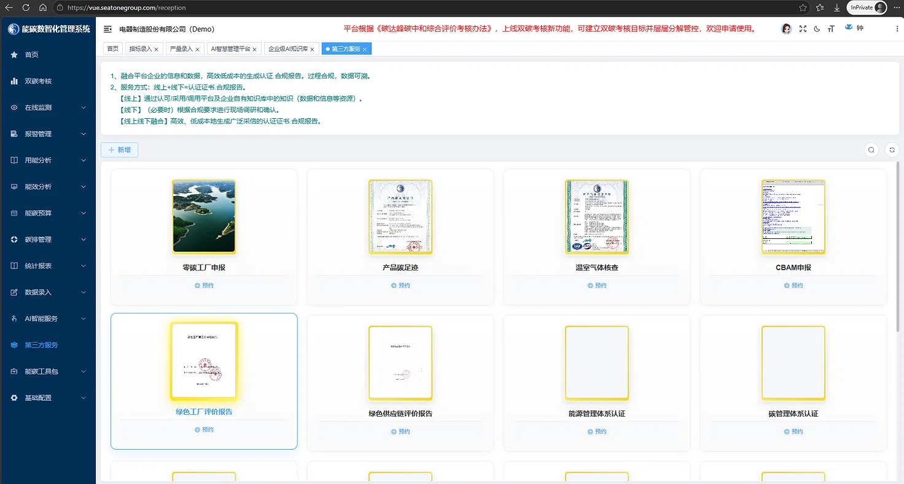
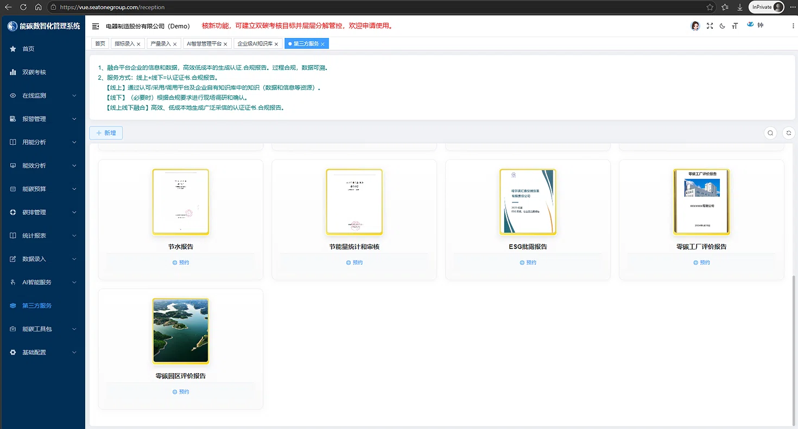
- 服务列表：展示第三方服务机构提供的服务（如认证、核查、咨询）。
- 服务详情：服务介绍、服务流程、联系方式、在线预约。
- 对接方式：可能对接认证机构、核查机构等第三方服务，提供预约接口。
3.13 能碳工具包
3.13.1 绿色工厂申报助手
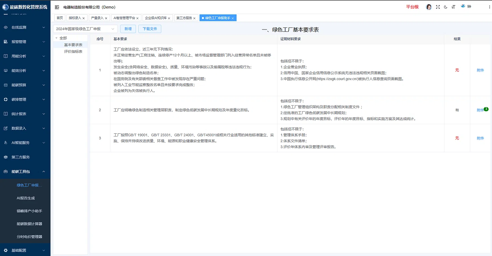
- 申报指引：按《绿色工厂评价通则》列出基本要求、评价指标表。
- 证明材料要求：每项要求对应证明材料清单（如企业营业执照、信用中国截图、管理体系手册等）。
- 结果标记：每项要求标记"有"/"无"，支持附件上传。
- 操作：新增申报、下载文件、逐项填写、保存进度。
3.13.2 AI报告生成
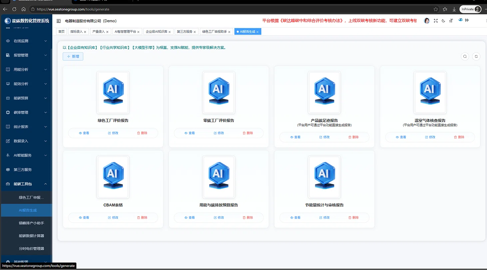
- 报告模板库：以卡片形式展示可生成的报告类型：
- 绿色工厂评价报告
- 零碳工厂评价报告
- 产品碳足迹报告（平台用户可通过平台功能直接生成报告）
- 温室气体核查报告
- CBAM表格
- 用能与碳排放预算报告
- 节能量统计与审核报告
- 操作：查看、修改、删除，以及"AI生成"按钮（调用大模型生成报告）。
- 技术说明：以【企业自有知识库】【行业共享知识库】【大模型引擎】为根基，支撑AI赋能，提供专家级解决方案。
3.13.3 错峰排产小助手
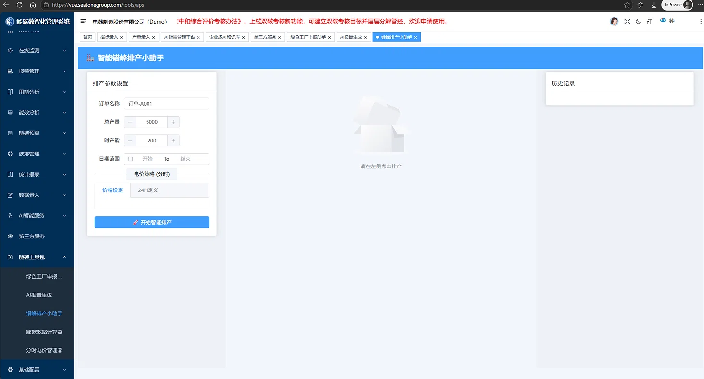
- 排产参数设置：订单名称、总产量、时产能、日期范围（开始-To-结束）。
- 电价策略：分时电价（尖峰、高峰、低谷、深谷），支持价格设定和24H时段定义。
- 智能排产：点击"开始智能排产"，根据电价和产能自动生成最优排产计划（生产时间安排），以降低用电成本。
- 历史记录：右侧展示历史排产记录。
3.13.4 能碳数据计算器
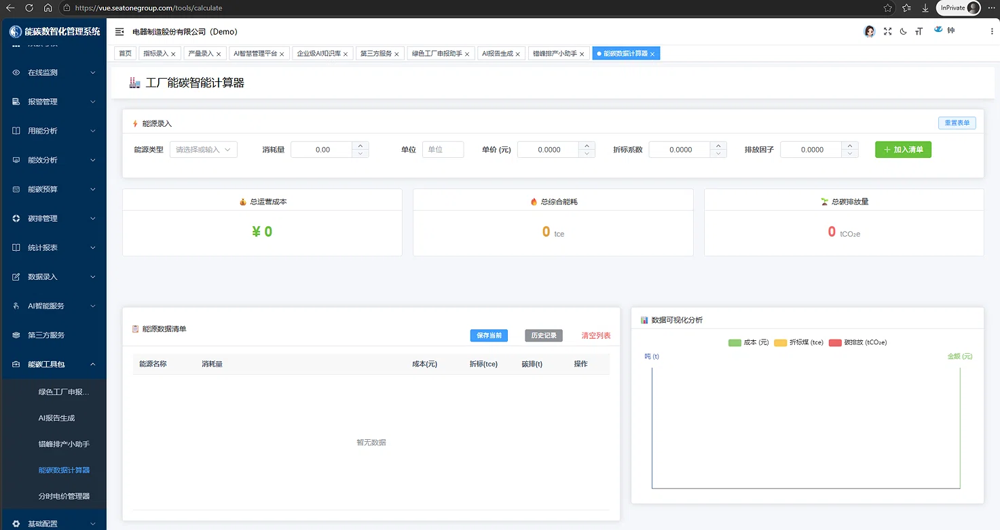
- 能源录入：选择能源类型（下拉选择或输入）、消耗量、单位、单价（元）、折标系数、排放因子。
- 自动计算：总运营成本（元）、总综合能耗（tce）、总碳排放量（tCO₂e）。
- 数据清单：列出已录入能源的成本、折标、碳排放，支持删除单条。
- 数据可视化分析：柱状图展示成本、折标煤、碳排放对比。
- 操作：加入清单、保存单据、历史记录、清空列表、重置表单。
3.13.5 分时电价管理器
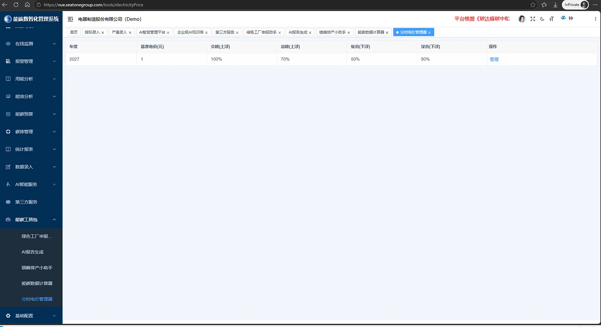
- 电价配置列表：年度、基准电价（元）、尖峰（上浮比例）、高峰（上浮比例）、低谷（下浮比例）、深谷（下浮比例）、操作（管理）。
- 时段定义：点击"管理"进入24小时内各时段的电价类别划分（尖峰/高峰/平时/低谷/深谷）。
3.14 基础配置
3.14.1 网关管理
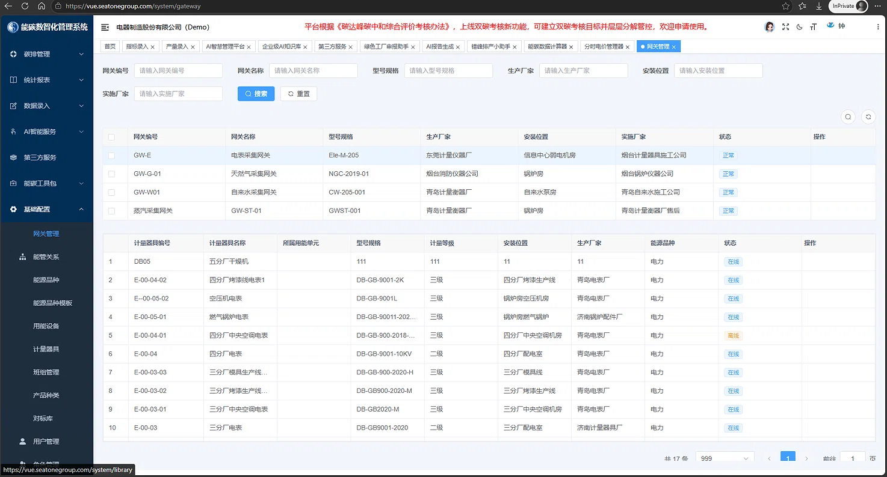
- 网关列表：网关编号、名称、型号、生产厂家、安装位置、实施厂家、状态。
- 计量器具管理：在同一页面下管理计量器具（编号、名称、所属用能单元、型号规格、计量等级、安装位置、生产厂家、能源品种、状态）。
- 操作：搜索、重置、分页。
3.14.2 能管关系（统计指标配置）
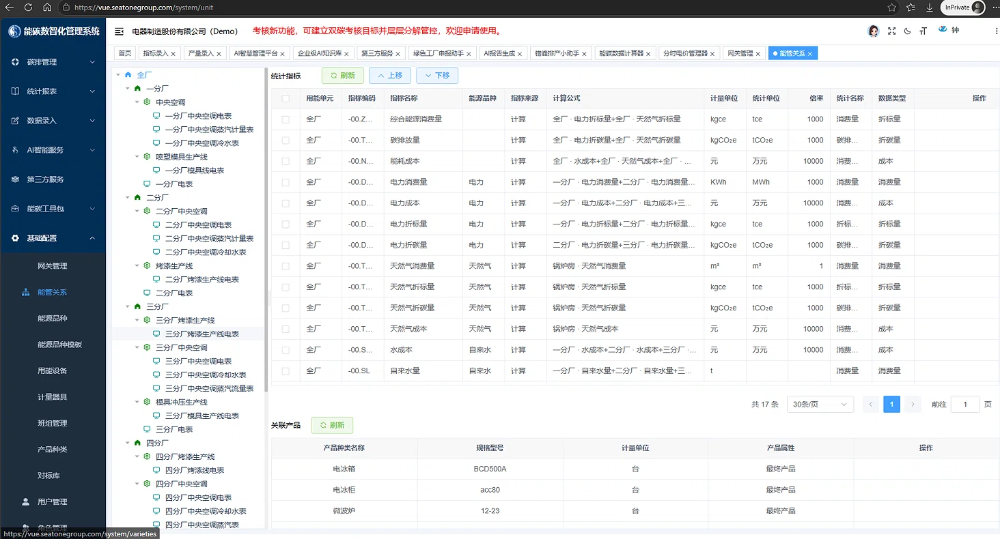
- 指标定义：配置统计指标（如综合能源消费量、碳排放量、能耗成本等），包括指标编码、名称、能源品种、指标来源（计算/录入）、计算公式、计量单位、统计单位、倍率、统计名称、数据类型。
- 层级结构：按全厂→分厂→用能单元组织。
- 操作：上移/下移调整顺序、新增、编辑、删除。
3.14.3 能源品种
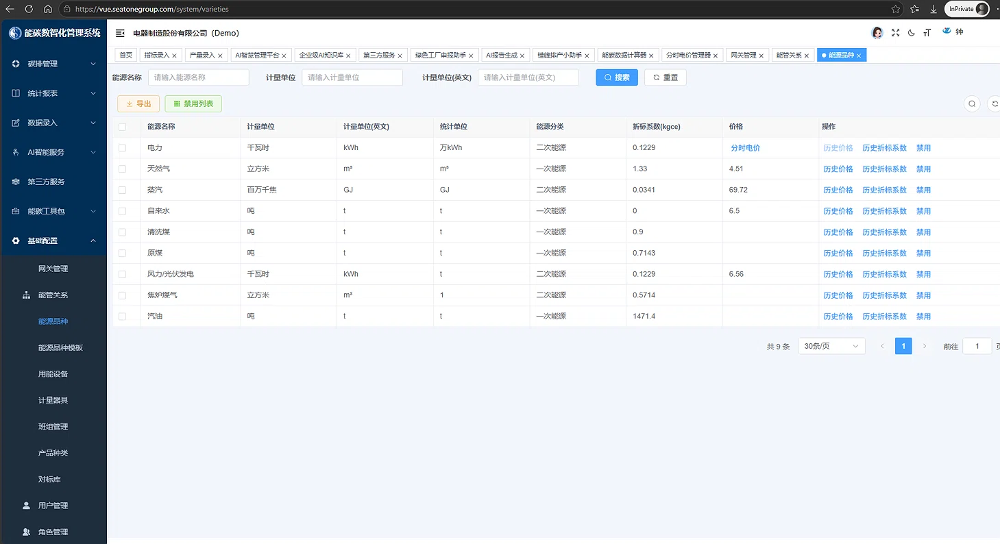
- 基础品种管理：能源名称、计量单位、计量单位（英文）、统计单位、能源分类（一次/二次/可再生能源）、折标系数（kgce）、价格（元/单位）。
- 操作：历史价格查看、历史折标系数查看、禁用/启用。
3.14.4 能源品种模板
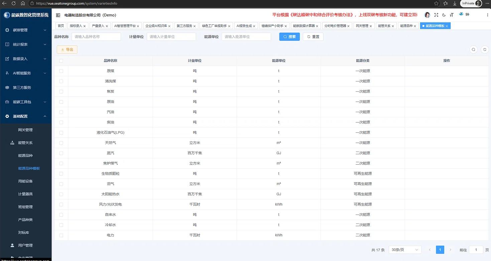
- 预设能源品种列表：包含原煤、清洗煤、焦炭、原油、汽油、柴油、液化石油气、天然气、焦炉煤气、生物质颗粒、沼气、太阳能热水、风力/光伏发电、自来水、冷却水、电力等。
- 操作：搜索、导出。
3.14.5 用能设备
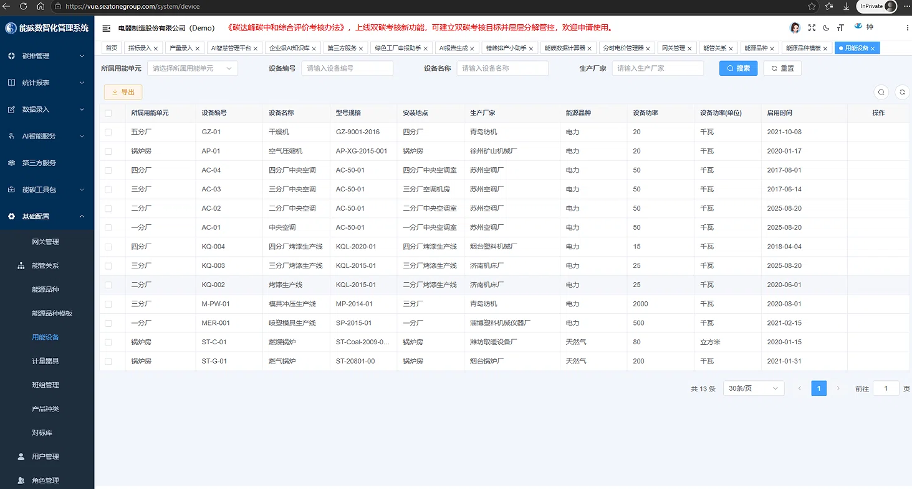
- 设备台账：所属用能单元、设备编号、名称、型号规格、安装地点、生产厂家、能源品种、设备功率、功率单位、启用时间。
- 操作：搜索、导出。
3.14.6 计量器具
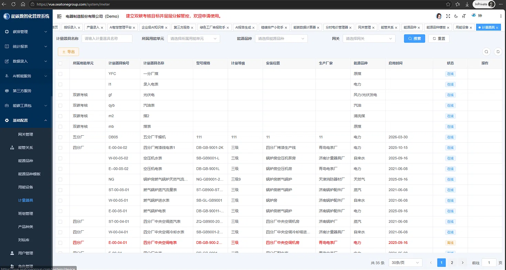
- 器具台账：所属用能单元、计量器具编号、名称、型号规格、计量等级、安装位置、生产厂家、能源品种、启用时间、状态（在线/离线）。
- 操作：搜索、导出。
3.14.7 班组管理
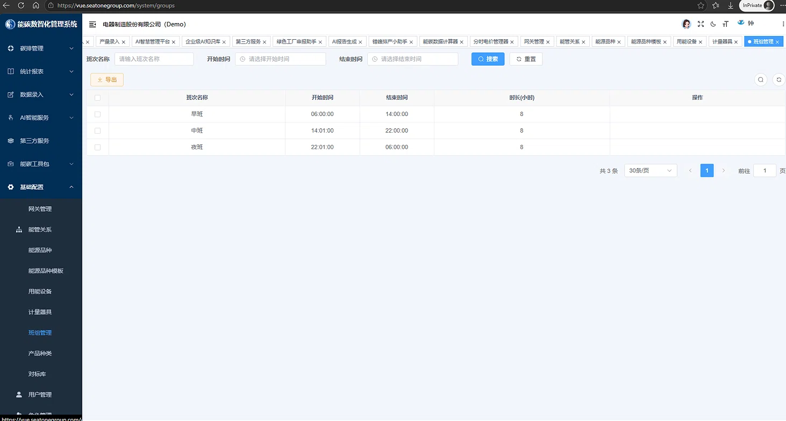
- 班次定义：班次名称、开始时间、结束时间、时长（小时）。
- 示例：早班（06:00-14:00，8小时）、中班、夜班。
- 操作：新增、编辑、删除。
3.14.8 产品种类
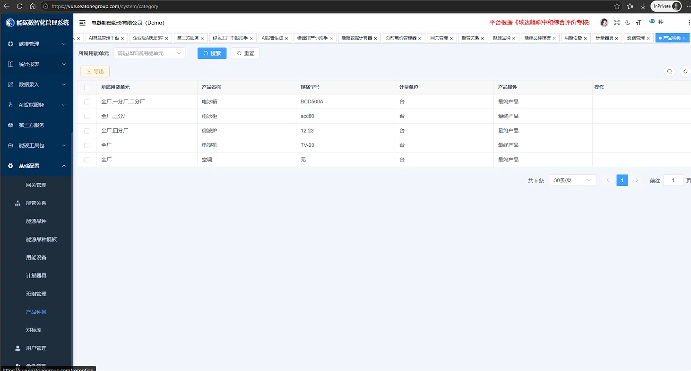
- 产品定义：所属用能单元、产品名称、规格型号、计量单位、产品属性（最终产品/中间产品等）。
- 用途：用于产量录入和碳足迹核算。
- 操作：新增、编辑、删除。
3.14.9 对标库
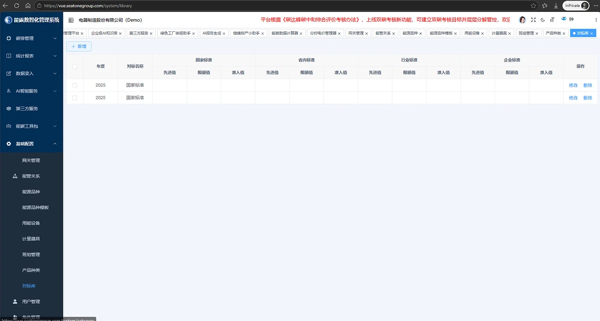
- 能效对标基准：年度、对标名称（如国家标准、省内标准、行业标准、企业标准），可设定具体数值或区间。
- 操作：新增、修改、删除。
3.14.10 用户管理
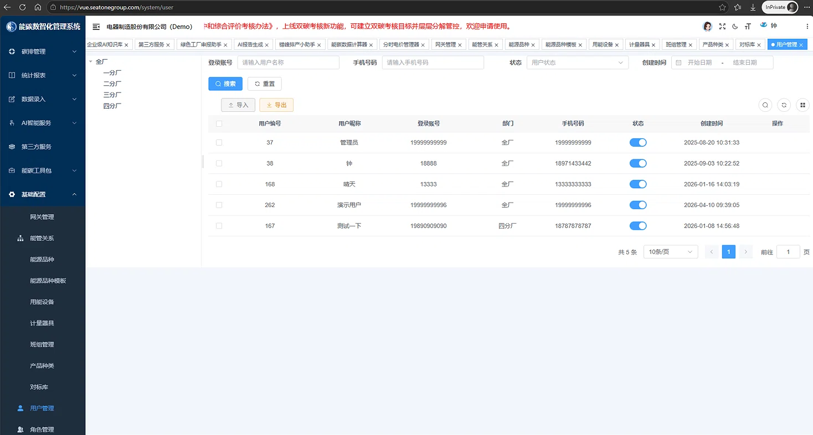
- 用户列表：用户编号、昵称、登录账号、部门、手机号码、状态、创建时间。
- 操作：搜索、新增、导入、导出、编辑、删除、分配角色。
3.14.11 角色管理
见第2章 用户角色与权限体系。支持角色名称、权限字符、显示顺序、状态（启用/禁用）配置。
4. 非功能性需求
4.1 性能需求
| 指标 | 要求 | 说明 |
|---|---|---|
| 实时数据采集延迟 | ≤ 5秒 | 从网关采集到平台展示 |
| 历史数据查询响应 | ≤ 3秒 | 百万级数据量下的查询 |
| 并发用户数 | ≥ 50 | 同时在线操作 |
| 报表生成 | ≤ 10秒 | 常规统计报表 |
| AI报告生成 | ≤ 60秒 | 大模型生成报告 |
4.2 安全需求
- 权限控制：基于角色的访问控制（RBAC），支持菜单权限与数据权限双重控制。
- 数据隔离：不同租户/企业的数据完全隔离。
- 传输加密：支持HTTPS加密传输。
- 审计日志：操作日志记录，支持审计追踪。
- 备份恢复：定期自动备份，支持数据恢复。
4.3 可用性需求
- 界面风格：采用Vue+Element UI，响应式设计，适配PC端。
- 数据导出：支持Excel、PDF导出。
- 帮助文档：提供在线帮助文档和操作指引。
- 多语言：当前支持中文，预留多语言扩展能力。
4.4 扩展性需求
- 架构：微服务架构，支持模块化扩展。
- 系统集成：支持与MES、ERP、SCADA等系统API对接。
- 部署方式：支持云部署（SaaS）或本地私有化部署。
- 协议支持：工业物联网网关支持Modbus、OPC UA等协议。
5. 技术架构
| 层级 | 技术选型 | 说明 |
|---|---|---|
| 前端 | Vue.js + Element UI / Ant Design Vue | 单页应用，组件化开发 |
| 后端 | 微服务（Spring Cloud / .NET Core） | RESTful API，服务拆分 |
| 数据库 | MySQL / PostgreSQL + InfluxDB | 关系型数据+时序数据 |
| 数据采集 | 工业物联网网关 | 支持Modbus、OPC UA等 |
| AI引擎 | 大模型（GPT/文心等） | 报告生成、智能问答 |
| 部署 | Docker + Kubernetes | 公有云/私有云 |
5.1 数据流架构
工业设备 → 物联网网关 → 消息队列 → 时序数据库（InfluxDB）→ 计算引擎 → 业务数据库（MySQL）→ 前端展示 → AI分析引擎
6. 附录：截图索引
| 图号 | 截图名称 | 对应章节 | 说明 |
|---|---|---|---|
| 图1 | 角色管理.png | 2. 用户角色与权限 | 角色列表与状态管理 |
| 图2 | 首页.png | 3.1 首页仪表盘 | 核心KPI与趋势图 |
| 图3 | 双碳考核.png | 3.2 双碳考核 | 目标考核与监控 |
| 图4 | 实时数据.webp | 3.3.1 实时数据 | 实时监测数据列表 |
| 图5 | 历史数据.png | 3.3.2 历史数据 | 历史数据查询 |
| 图6 | 报警设置.webp | 3.4.1 报警设置 | 阈值配置 |
| 图7 | 报警查询.webp | 3.4.2 报警查询 | 报警记录与处理 |
| 图8 | 能耗查询.webp | 3.5.1 能耗查询 | 能耗统计与图表 |
| 图9 | 电费分析.png | 3.5.2 电费分析 | 分时电费明细 |
| 图10 | 能效分析.png | 3.6.1 能效分析 | 能效对标与分析 |
| 图11 | 能流分析.webp | 3.6.2 能流分析 | 桑基图与能效平衡 |
| 图12 | 碳能预算.png | 3.7 能碳预算 | 预算设定与跟踪 |
| 图13 | 碳排放核算.webp | 3.8.1 碳排放核算 | 排放清单与报告 |
| 图14 | CBAM核算.webp | 3.8.3 CBAM核算 | 碳关税数据填报 |
| 图15 | 供应链管理.webp | 3.8.4 供应链管理 | 供应商碳足迹 |
| 图16 | 碳资产.png | 3.8.5 碳资产 | 碳配额与CCER管理 |
| 图17 | 碳排放因子.webp | 3.8.6 碳排放因子 | 排放因子库 |
| 图18 | 碳核查支撑.webp | 3.8.7 碳核查支撑 | 核查数据与附件 |
| 图19 | 碳核算建模.webp | 3.8.8 碳核算建模 | 核算模型配置 |
| 图20 | 碳足迹建模.webp | 3.8.9 碳足迹建模 | 足迹模型配置 |
| 图21 | 能耗统计表.webp | 3.9.1 能耗统计表 | 日报/月报/年报 |
| 图22 | 用能成本统计表.webp | 3.9.4 用能成本统计表 | 成本统计 |
| 图23 | 指标录入.webp | 3.10.1 指标录入 | 手动数据录入 |
| 图24 | 产量录入.webp | 3.10.2 产量录入 | 产量数据录入 |
| 图25 | 第三方服务1.webp | 3.12 第三方服务 | 服务列表 |
| 图26 | 第三方服务2.webp | 3.12 第三方服务 | 服务详情 |
| 图27 | 绿色工厂申报.webp | 3.13.1 绿色工厂申报 | 申报资料准备 |
| 图28 | AI报告生成.webp | 3.13.2 AI报告生成 | 报告模板与AI生成 |
| 图29 | 错峰排产小助手.webp | 3.13.3 错峰排产 | 智能排产 |
| 图30 | 能碳数据计算器.webp | 3.13.4 能碳计算器 | 能耗碳排计算 |
| 图31 | 分时电价管理器.webp | 3.13.5 分时电价 | 电价策略配置 |
| 图32 | 网关管理.webp | 3.14.1 网关管理 | 网关与计量器具 |
| 图33 | 能管关系.webp | 3.14.2 能管关系 | 统计指标配置 |
| 图34 | 能源品种.webp | 3.14.3 能源品种 | 能源基础数据 |
| 图35 | 能源品种模板.webp | 3.14.4 能源品种模板 | 预设品种库 |
| 图36 | 用能设备.webp | 3.14.5 用能设备 | 设备台账 |
| 图37 | 计量器具.webp | 3.14.6 计量器具 | 器具台账 |
| 图38 | 班组管理.webp | 3.14.7 班组管理 | 班次定义 |
| 图39 | 产品种类.webp | 3.14.8 产品种类 | 产品定义 |
| 图40 | 对标库.webp | 3.14.9 对标库 | 能效基准 |
| 图41 | 用户管理.webp | 3.14.10 用户管理 | 用户列表 |
本文档基于能碳管理平台现有系统截图进行功能还原与需求梳理，覆盖14个一级模块、41个功能页面。所有功能描述均与截图内容一一对应，可作为产品开发、测试验收的参考依据。